File: 000120.gt.txt (if the image is defective, simply delete all Arabic text and the line will be excluded)
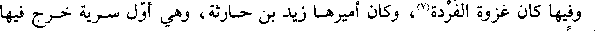
وفيها كان غزوة الفردة(7)، وكان أميرها زيد بن حارثة، وهي أول سرية خرج فيها
File: 000121.gt.txt (if the image is defective, simply delete all Arabic text and the line will be excluded)
زيد أميرا.
File: 000122.gt.txt (if the image is defective, simply delete all Arabic text and the line will be excluded)
فسلكوا طريق العراق، فخرج منهم جماعة، فيهم صفوان بن أمية، وأبو سفيان. وكان
File: 000123.gt.txt (if the image is defective, simply delete all Arabic text and the line will be excluded)
عظيم تجارتهم الفضة، وكان دليلهم فرات بن حيان، بن بكر وائل، فبعث رسول
File: 000124.gt.txt (if the image is defective, simply delete all Arabic text and the line will be excluded)
الله، صلى الله عليه وآله وسلم، زيدا، فلقيهم على ماء يقال له الفردة، فأصاب العير وما فيها، وأعجزه
File: 000125.gt.txt (if the image is defective, simply delete all Arabic text and the line will be excluded)
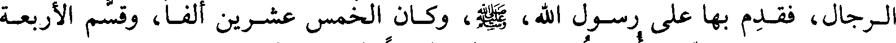
الرجال، فقدم بها على رسول الله، صعلم، وكان الخمس عشرين ألفا، وقسم الأربعة
File: 000126.gt.txt (if the image is defective, simply delete all Arabic text and the line will be excluded)
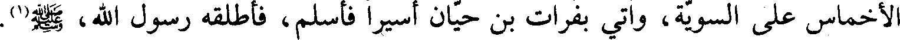
أخماس على السوية، وأتى بفرات بن حيان أسيرا فأسلم، فأطلقه رسول الله، صلى الله عليه وآله وسلم(1).
File: 000127.gt.txt (if the image is defective, simply delete all Arabic text and the line will be excluded)
(الفردة: ماء بنجد، وقد اختلف العلماء في ضبطه، فقيل فردة بالفاء المفتوحة
File: 000128.gt.txt (if the image is defective, simply delete all Arabic text and the line will be excluded)
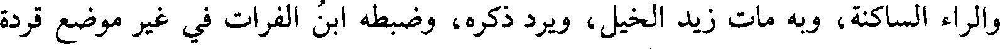
والراء الساكنة، وبه مات زيد الخيل، ويرد ذكره، وضبطه ابن الفرات في غير موضع قردة
File: 000129.gt.txt (if the image is defective, simply delete all Arabic text and the line will be excluded)
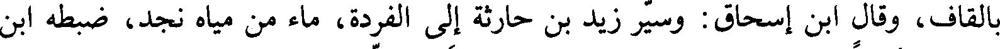
بالقاف، وقال ابن إسحاق: وسير زيد بن حارثة إلى الفردة، ماء من مياه نجد، ضبطه ابن
File: 000130.gt.txt (if the image is defective, simply delete all Arabic text and the line will be excluded)
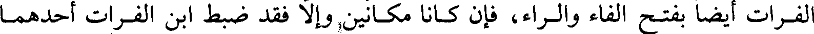
الفرات أيضا بفتح الفاء والراء، فإن كانا مكانين وإلا فقد ضبط ابن الفرات أحدهما
File: 000131.gt.txt (if the image is defective, simply delete all Arabic text and the line will be excluded)
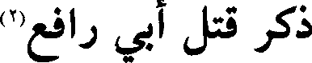
ذكر قتل أبي رافع(2)
File: 000132.gt.txt (if the image is defective, simply delete all Arabic text and the line will be excluded)
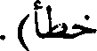
خطأ).
File: 000133.gt.txt (if the image is defective, simply delete all Arabic text and the line will be excluded)
في هذه السنة في جمادى الآخرة، قتل أبو رافع سلام بن أبي الحقيق اليهودي، وكان
File: 000134.gt.txt (if the image is defective, simply delete all Arabic text and the line will be excluded)
يظاهر كعب بن الأشرف على رسول الله، فلما قتل كعب بن الأشرف، وكان قتلته
File: 000135.gt.txt (if the image is defective, simply delete all Arabic text and the line will be excluded)
من الأوس، قالت الخزرج: والله لا يذهبون بها علينا عند رسول الله، صعلم، وكانا
File: 000136.gt.txt (if the image is defective, simply delete all Arabic text and the line will be excluded)
يتصاولان(3) تصاول الفحلين، فتذاكر الخزرج من يعادي رسول الله، صعلم، كابن الأشرف،
File: 000137.gt.txt (if the image is defective, simply delete all Arabic text and the line will be excluded)

فذكروا ابن أبي الحقيق، وهو بخيبر، فاستأذنوا رسول الله، صعلم، في قتله، فأذن لهم،
File: 000138.gt.txt (if the image is defective, simply delete all Arabic text and the line will be excluded)
فخرج إليه من الخزرج عبد الله بن عتيك، ومسعود بن سنان، وعبد الله بن أنيس، وأبو
File: 000139.gt.txt (if the image is defective, simply delete all Arabic text and the line will be excluded)
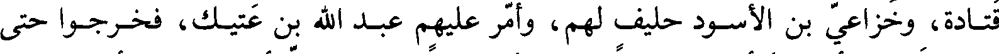
قتادة، وخزاعي بن الأسود حليف لهم، وأمر عليهم عبد الله بن عتيك، فخرجوا حتى
File: 000140.gt.txt (if the image is defective, simply delete all Arabic text and the line will be excluded)
قدموا خيبر، فأتوا دار أبي رافع ليلا، فلم يدعوا بابا في الدار إلا أغلقوه على أهله، وكان
File: 000141.gt.txt (if the image is defective, simply delete all Arabic text and the line will be excluded)
في علية، فاستأذنوا عليه، فخرجت امرأته فقالت: من أنتم؟ قالوا: نفر من العرب
File: 000142.gt.txt (if the image is defective, simply delete all Arabic text and the line will be excluded)
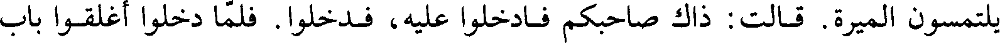
يلتمسون الميرة. قالت: ذاك صاحبكم فادخلوا عليه، فدخلوا. فلما دخلوا أغلقوا باب
File: 000143.gt.txt (if the image is defective, simply delete all Arabic text and the line will be excluded)
العلية ووجدوه على فراشه وابتدروه، فصاحت المرأة، فجعل الرجل منهم يريد قتلها،
File: 000144.gt.txt (if the image is defective, simply delete all Arabic text and the line will be excluded)
انتهيت إلى درجة، فوضعت رجلي وأنا أظن أني انتهيت إلى الأرض، فوقعت في ليلة
File: 000145.gt.txt (if the image is defective, simply delete all Arabic text and the line will be excluded)
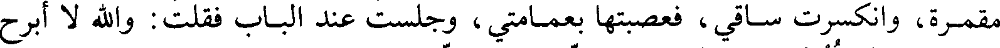
مقمرة، وانكسرت ساقي، فعصبتها بعمامتي، وجلست عند الباب فقلت: والله لا أبرح
File: 000146.gt.txt (if the image is defective, simply delete all Arabic text and the line will be excluded)
حتى أعلم أقتلته أم لا . فلما صاح الديك قام الناعي فقال: أنعي أبا رافع تاجر أهل
File: 000147.gt.txt (if the image is defective, simply delete all Arabic text and the line will be excluded)

الحجاز، فانطلقت إلى أصحابي فقلت: النجاء! قد قتل الله أبا رافع ، فانتهيت إلى
File: 000148.gt.txt (if the image is defective, simply delete all Arabic text and the line will be excluded)
النبي، صلى الله عليه وآله وسلم، فحدثته. فقال: ابسط رجلك. فبسطتها، فمسحها، فكأني لم أشتكها
File: 000149.gt.txt (if the image is defective, simply delete all Arabic text and the line will be excluded)
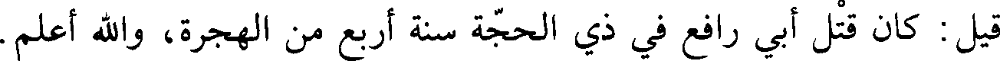
قيل: كان قتل أبي رافع في ذي الحجة سنة أربع من الهجرة، والله أعلم.
To Save: `Ctrl+s`, make sure to choose `Webpage, complete`!